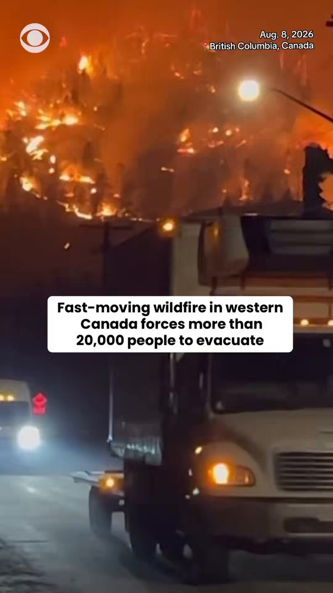

@CBSNews
📝 原文: Some meat products containing jalapeños may be linked to salmonella outbreak, USDA says
🇨🇳 译文: 美国农业部表示，一些含有墨西哥辣椒的肉制品可能与沙门氏菌爆发有关

🕒 2026-08-09T04:00:00+00:00
| 来源 | 旧窗口内数量 | 本次新增 | 本次淘汰 | 当前窗口内共有 |
|---|---|---|---|---|
| 推文 + Dawn 新闻 | 0 | 25 | 0 | 25 |
| ARY News | 0 | 0 | 0 | 0 |
注：淘汰数 = 旧窗口内数量 + 本次新增 - 当前窗口内共有





暂无文章。